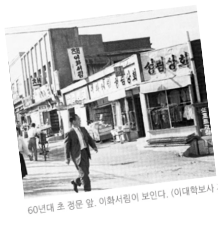
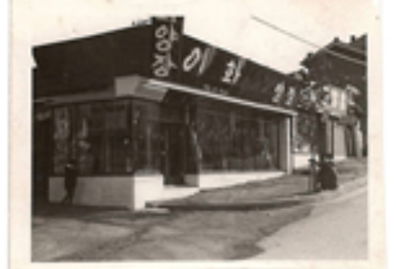

이대 상권의 어제와 오늘
1980년대부터 현재까지 이대 상권의 변화
그 시절 멋쟁이들은 이대 앞으로 모였다


양장점과 구두가게
정문에서 이대입구역까지 이르는 길은 「몬아미 양장젼」, 「다림 양장젼」 등의 한옥집을 개조한 맞춤복 양장점들이 줄지어 있었고 띄엄띄엄 구둣가게도 있었다.
기성복이 흔치 않았던 시절, 직접 원단과 디자인을 선택해 ‘세상에서 하나밖에 없는 내 옷’을 가지려는 당대의 멋쟁이들이 모두 이대 앞 양장점으로 몰렸다.
40대 초중반이상 졸업생들에게는 낯익은 상호인 「광생약국」, 「그린하우스」, 「호원당」도 모두 이 때 생긴 것이다.